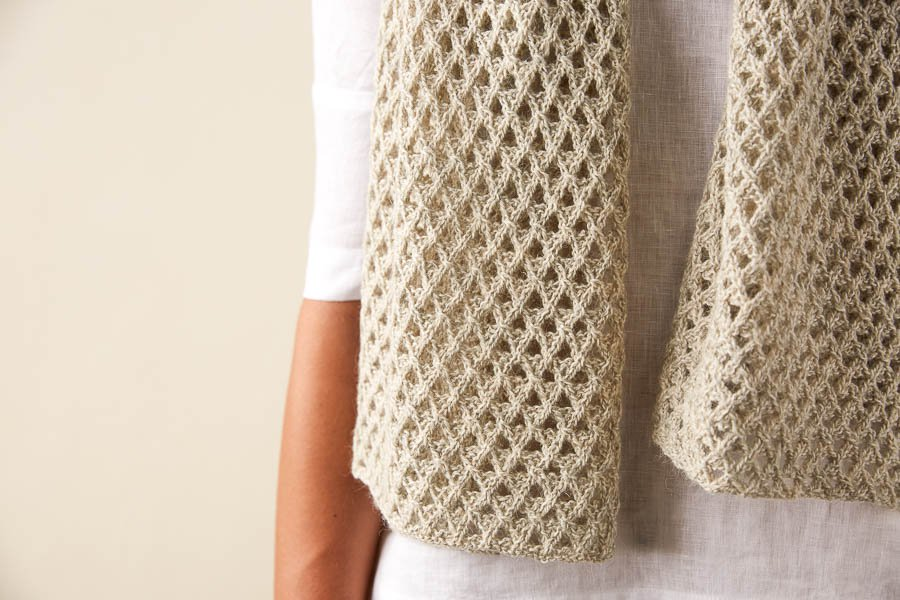

Aperture Wrap
September 30, 2018 | How to knit a scarf, a gift for your boyfriend.
September 30, 2018 | How to crotched a rainbow crocodile.
Like a pinhole camera whose little opening catches the light and makes magic, our Aperture Wrap is a wonderfully surprising knit designed to let the light shine in!
Knit up in Deep Waffle Stitch, you’ll find yourself engaged with a clever combination of right and left twists,double yarn overs, and simple decreases. It’s a fun challenge for advanced beginners and a mindful knit for more experienced knitters.
As you master the simple 8-row repeat, you’ll soon be taken with the highly dimensional and voluminous fabric emerging, a bas relief trellis back dropped by pretty lace openings.
We created this sweep of fabric with just three skeins of our Linen Quill, a beautiful blend of fine highland wool, alpaca, and linen. Choose from 31 colors to suit the season’s mood, and grab your Aperture Wrap day after day just to relish its beauty!
GAUGE
28 stitches and 30 rows = 4 inches in Deep Waffle Stitch, after blocking
SIZE
Finished Dimensions: 18 inches wide x 79 inches long
NOTES
LT (LEFT TWIST)
Knit into back of second stitch on left needle, leaving stitch on needle, then knit into front of first stitch on left needle and slip the two stitches from needle together.
RT (RIGHT TWIST)
Knit into front of second stitch on left needle, leaving stitch on needle, then knit into front of first stitch on left needle and slip the two stitches from needle together.
GAUGE
STITCH MULTIPLE
This pattern is worked over a multiple of 4 stitches + 2.
PATTERN Cast on 126 stitches.
Row 1 (right side): P2, *RT (see Notes), p2, repeat from * to end of row.
Row 2 (wrong side): K2, *p2, k2, repeat from * to end of row.
Row 3: P1, *k2tog, [yarn over (yo)] twice, slip slip knit (ssk), repeat from * to last stitch, p1.
Row 4: P2, *(k1, p1) into double yo of previous row, p2, repeat from * to end of row.
Row 5: K2, *p2, LT (see Notes), repeat from * to last 4 stitches. p2, k2.
Row 6: P2, *k2, p2, repeat from * to end of row.
Row 7: P1, yo, *ssk, k2tog, [yo] twice, repeat from * to last 5 stitches, ssk, k2tog, yo, p1.
Row 8: K2, *p2, (k1, p1) into double yo of previous row, repeat from * to last 4 stitches, p2, k2.
Repeat Rows 1–8 until piece measures approximately 79 inches from cast-on edge.
Repeat Row 1.
Bind off all stitches in pattern.
Weave in ends and block as desired!
Tag: #Yarn #Scarf #Knit